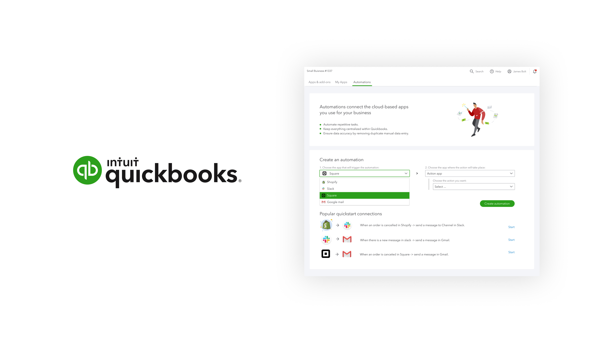

Axios · AI Newsroom2024 · News
Elevating digital news delivery through AI‑powered tools for both consumers and newsrooms.

Intuit · QuickBooks AppConnect2023 · SMB
Extending the utility of small businesses to help them compete with major retailers.

Prudential / PGIM2022 · Finance
Taxonomy, design system, SIA payments flow, and PGIM usability across the finance giant.
Wayfinding · NJIT2021 · Research
Enhancing wayfinding for NJIT's Hillier College through eye‑tracking research.